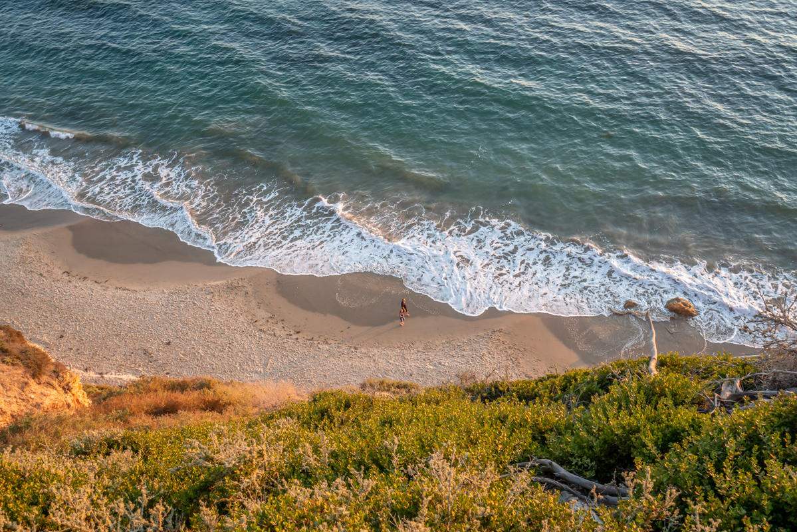
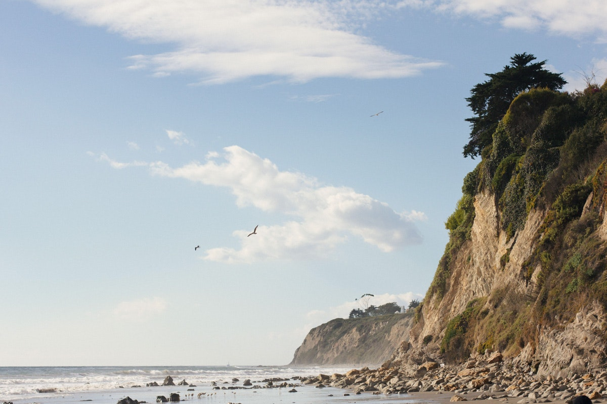
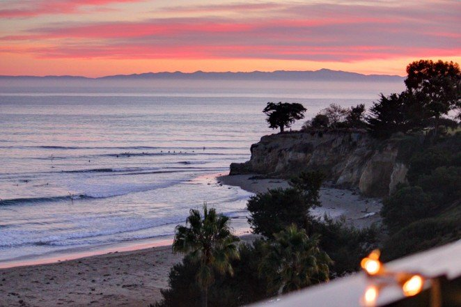

Mesa Lane is a popular option. People love that it is dog friendly, but be warned of the steep staircase down to the beach!
Another fan favorite! Easy to access from the Mesa or Downtown, but less busy than town beaches. Again, fair warning on some slippery steps in order to access!
Lovely beach that is easily accessible from the Harbor or downtown. Bring a surboard, you might get lucky and score some waves!
Did I miss your favorite SB beach? Let me know!
Back to top!